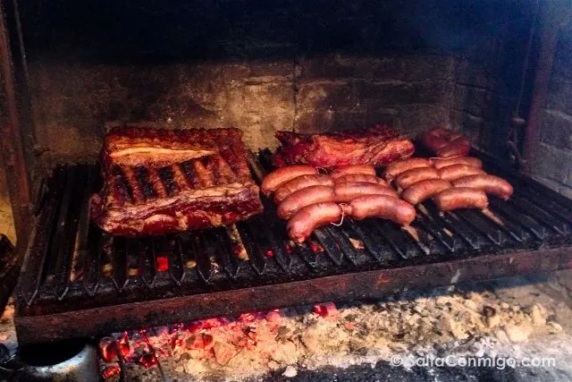
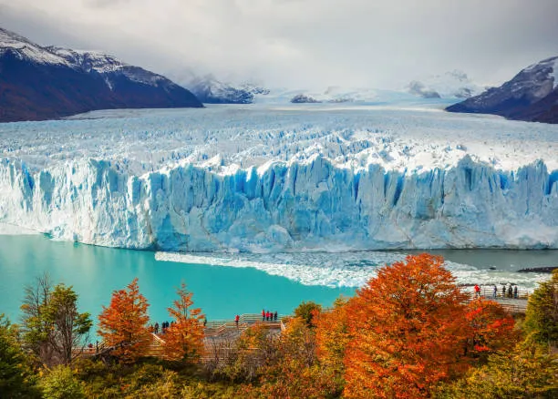

Futbol Argentino

El fútbol en Argentina representa mucho más que un deporte; es un símbolo fundamental de identidad nacional y reconocido a nivel mundial por jugadores como: El Diego, Messi, Kempes y Batistuta, entre otros.
Ver masEl fútbol en Argentina representa mucho más que un deporte; es un símbolo fundamental de identidad nacional y reconocido a nivel mundial por jugadores como: El Diego, Messi, Kempes y Batistuta, entre otros.
Ver masLa música en Argentina mezcla raíces indígenas e influencias europeas, reflejando su historia y cultura. Incluye bandas reconocidas como Patricio Rey y sus Redonditos de Ricota y Los Piojos , y artistas actuales como Trueno y Duki. Sus principales géneros son el folklore, el rock y el trap.
Ver mas
La gastronomía argentina es una mezcla de tradiciones indígenas, influencias españolas e italianas y cultura de carnes. Sus platos más famosos son el asado, el locro y las empanadas. Aparte ingresa una infusion muy famosa la cual es el mate.
Ver mas
El turismo es una parte fundamental de la economia en la Argentina, Aparte de tener 2 de las 7 maravillas del mundo, Las cuales son El Glacial Perito Moreno y Las Cataratas Del Iguazú
Ver mas